Hi, my name is Connor Rowland. I am profoundly deaf, and use cochlear implants to hear. Spoken language can be difficult in some situations, but one reason I love coding is that computer languages seem to come naturally to me!
I got into coding by creating some maps and mods for one of my favourite games, Valve Software’s TF2. This interest has grown over the years, and with a colleague I built a large website from scratch for the whole TF2 gaming community where people can trade and acquire customizations. This has involved front and back end, and I enjoy both. I enjoyed working with my friend and love being at the heart of a great group of people there.
I'm a recently qualified Junior Full Stack Developer. I’m really keen to now move into coding full time and increase my knowledge of practical coding. I also help out every week at the local food bank, it’s rewarding to do something positive for people who need help.
Below you can see some more details of my work and what languages I use. There’s also some examples of the things I’ve worked on. Thanks for looking at my site!
Odd One Out Game
A fast and furious odd-one-out logic game to play, figure out which one of the shape is different to all others, it took about 30 hours to make.
redsun.tf
One of my main recent projects is redsun.tf, a community home for Valve Software’s TF2, where people can trade and acquire customizations and mods.
I am one of two lead programmers for both frontend and backend, using HTML, CSS, JavaScript, Python and Django.
I built the site from scratch with my colleague, and I continue to provide new functionality. I also maintain their large MySQL database.
SourcePawn
Since late 2018, I've actively created and maintained many plugins using SourcePawn language, similar to C++
Randomizer - Game randomizes what loadout player has to play, including combinations where its normally not possible to do
VScript - useful libary that allows other plugins to make use of VScript features
Versus Saxton Hale - One man, Saxton Hale, has a task to kill everyone else in a One versus All match
Super Zombie Fortress - Group of survivors only have one life to reach the end of the map, facing a horde of zombies.
Maps
From 2016 to 2018, and still a little to this day, I've developed several maps for Team Fortress 2 community, each for different gamemode, themes, and gimmicks.
I tried to give each map its own unique gameplay and gimmick to differ from many other maps that had been made.
Select image for more info
Buffer
Trainyard
It's a yard full of trains, simple enough? For a Mann vs Machine gamemode, area occasionally get trains passing through the area, but there can be enemy trains stopping by to help enemy robots make use of it to take a shortcut!
Burgstadt
Orginally for Mann vs Machine, it later get converted for GunGame. Set in a medieval market town, players face eachother for a deathmatch where only one can win.
S
h
a
p
e
s
In a mysterious place, two islands for two teams face eachother a Dodgeball deathmatch, with the changing map every round on different color, shape, layout, and maybe even a gimmik.
 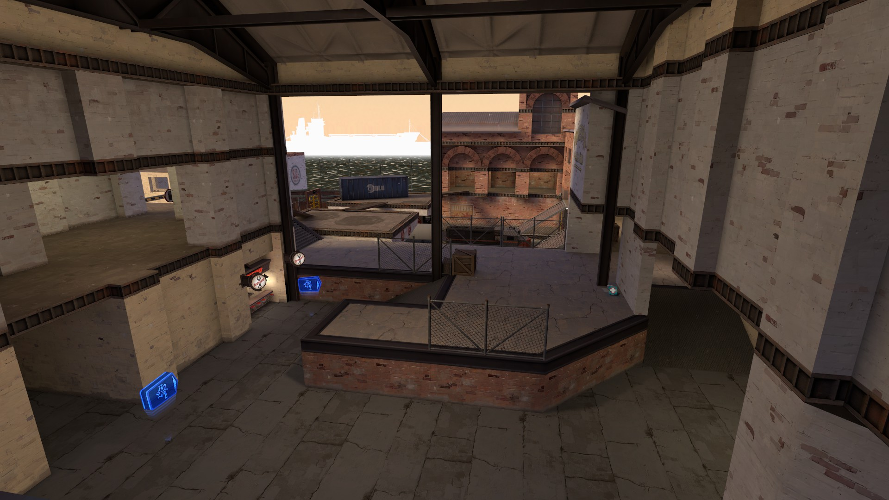
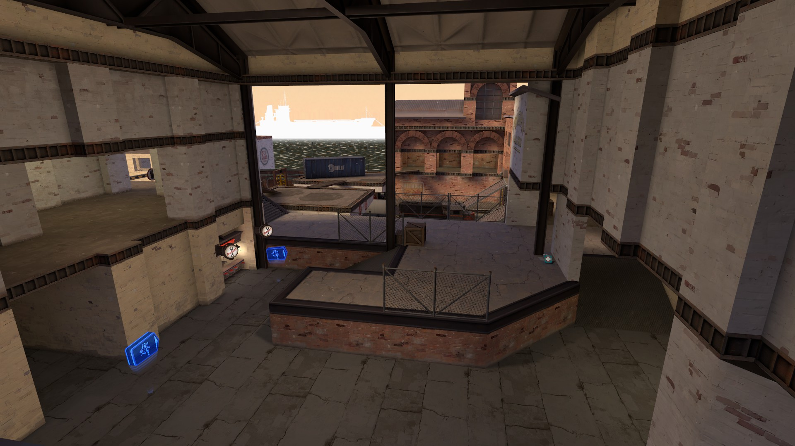
 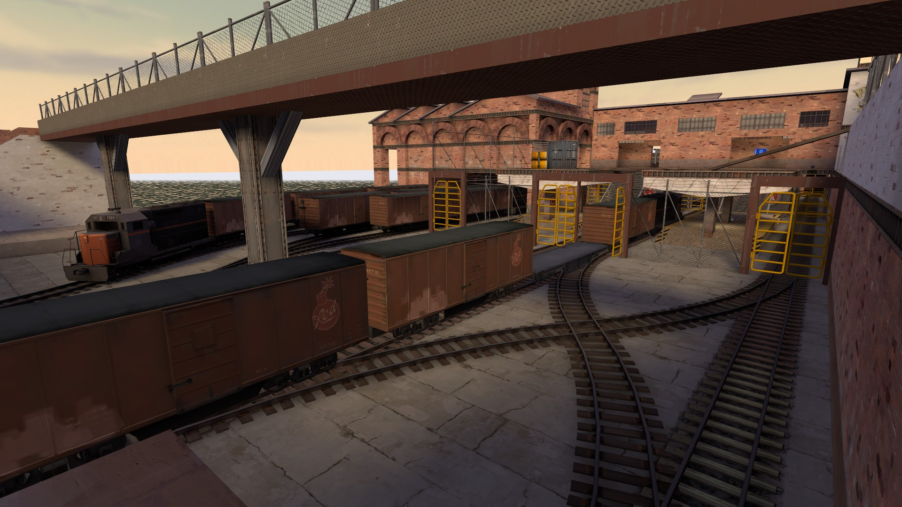
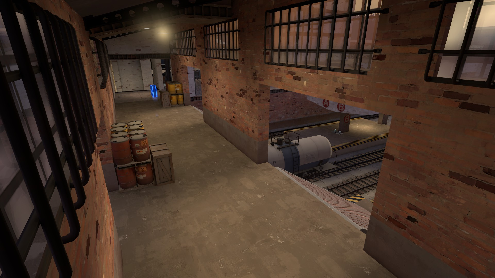
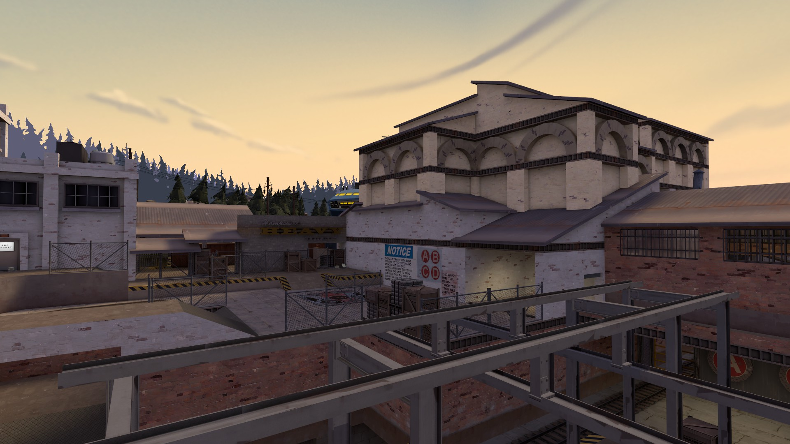
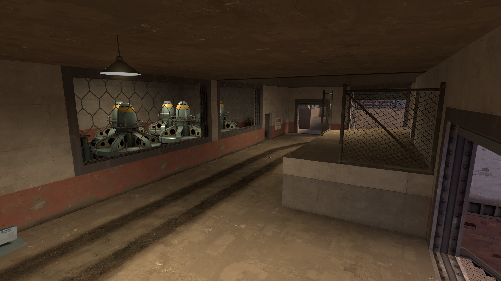
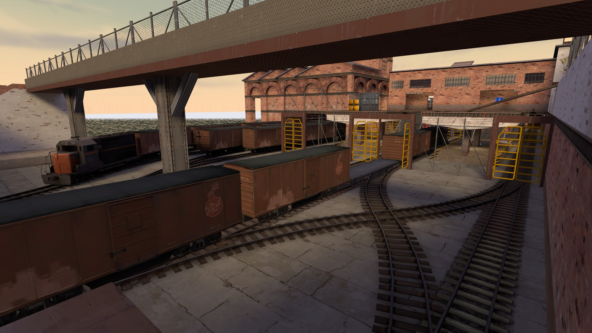
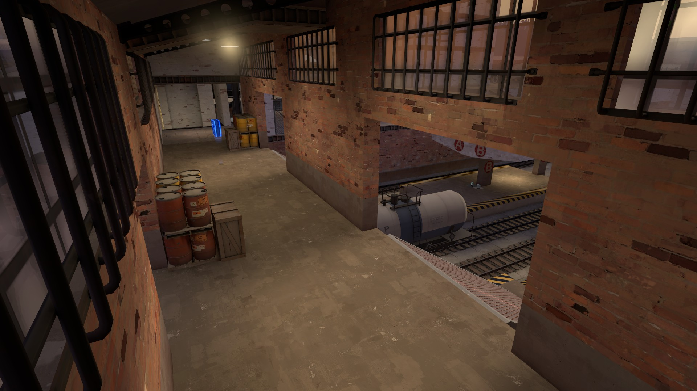
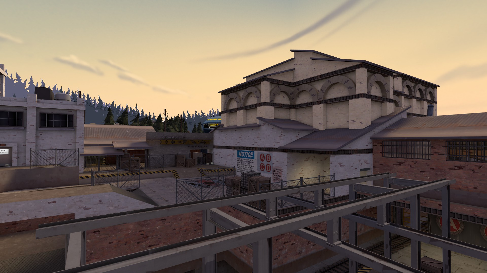
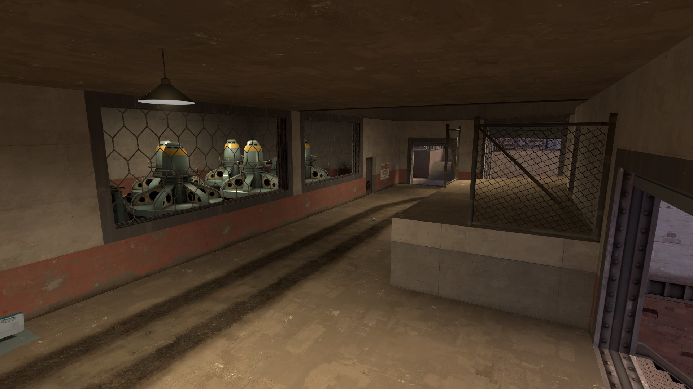
 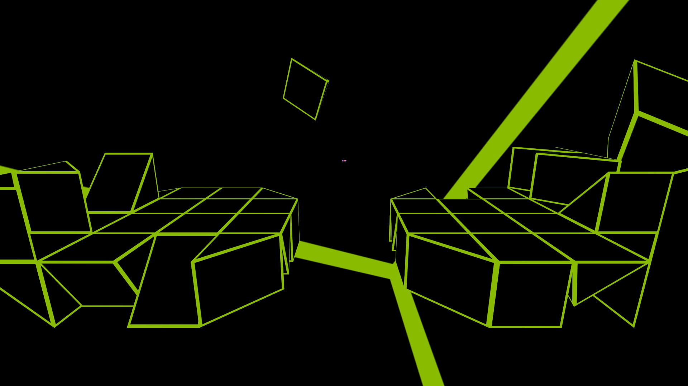
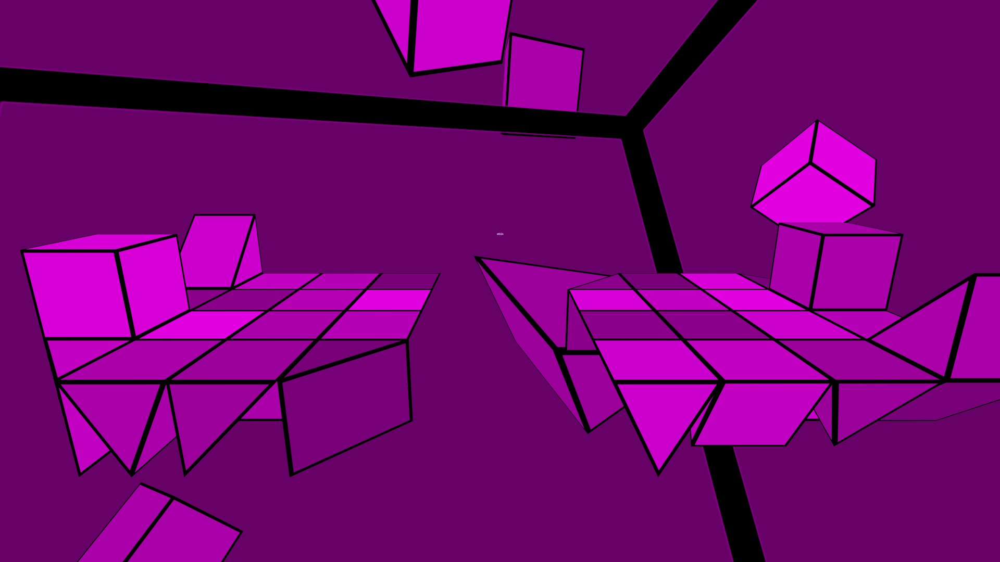
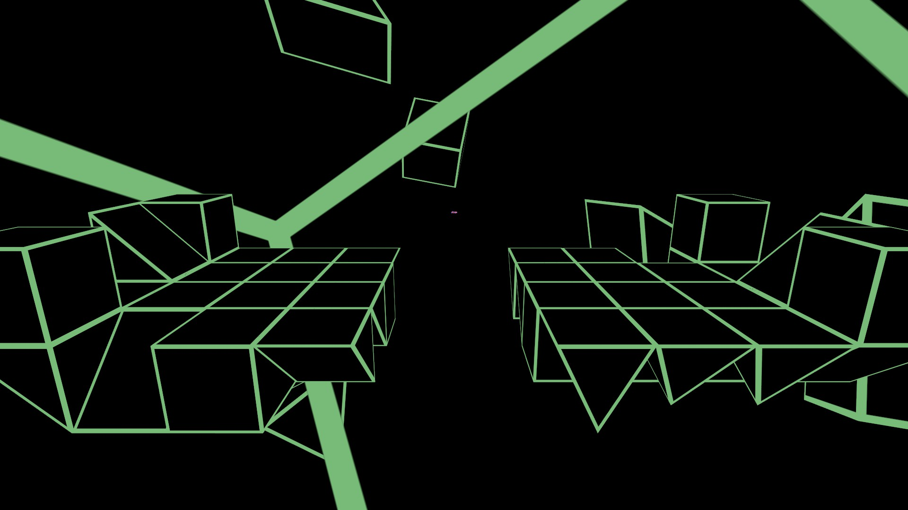
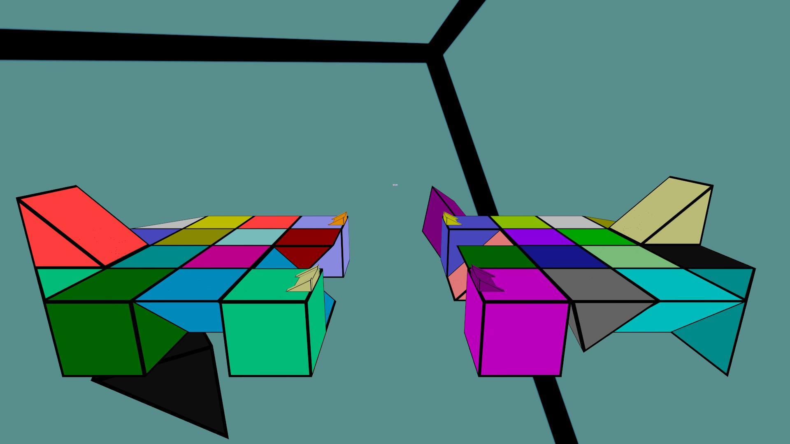
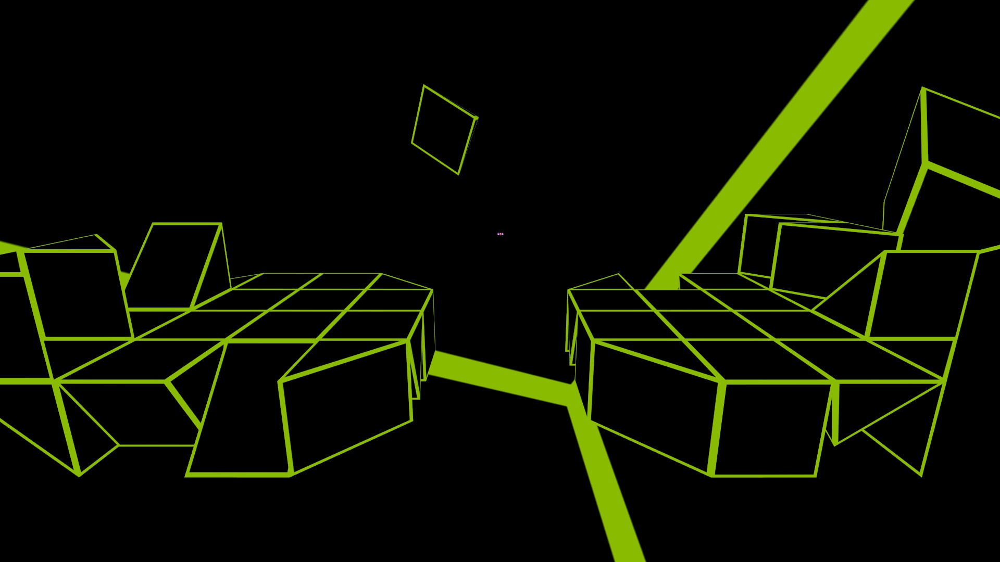
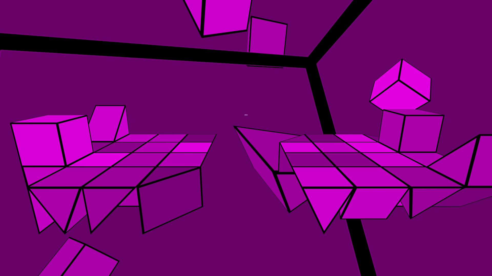
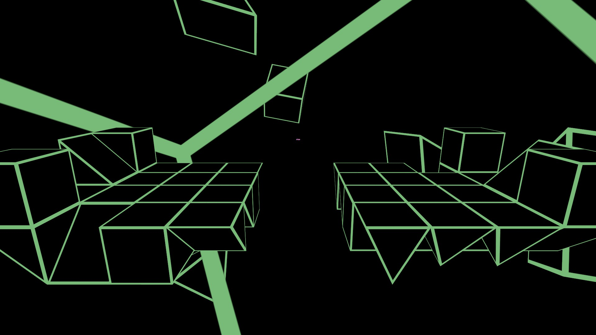
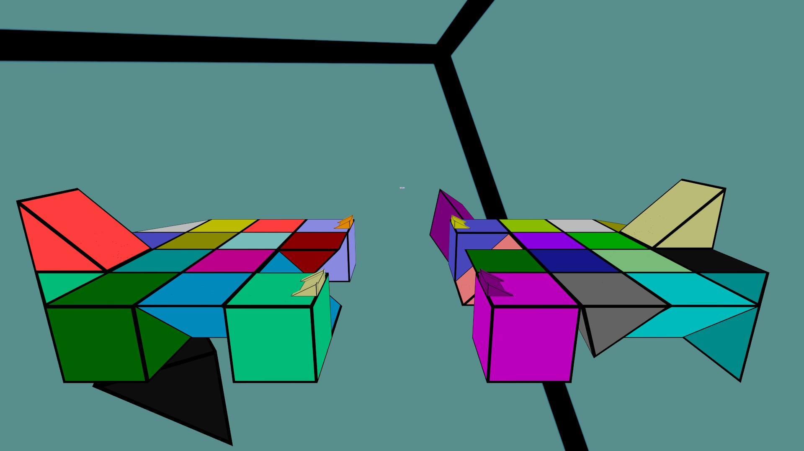